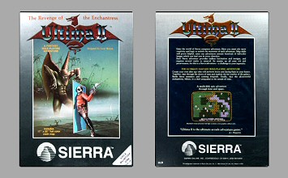
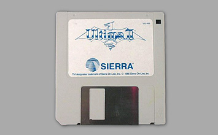
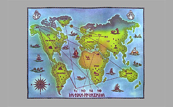

Contents
Manual, Disk Cloning Guide, Cloth Map (16x12" / 40x30 cm), Reg Card, 1x 3.5" FD, 2 Extra Stickers for Player Disks
Year of Release
1985
Publisher
Sierra On-Line Inc.
Description
The Macintosh version of Ultima II was published by Sierra in the same type of box as the re-releases for PC or Apple. It contains a slightly different manual that deals with Macintosh specific issues, an additional 'Disk Cloning Guide' and usually a much smaller variation of the cloth map (40x30 cm / 16x12"). Gameplay wise it is very similar to the ST version - also using standard operating system menus and windows - but it only has monochrome graphics (just like its successor too). There is only one box variation for the Macintosh version (A+ Magazine quote on the back).
Availability
Images
Game Box
Documentation
Missing image 🚫
Disks
Maps
Extras
Not available